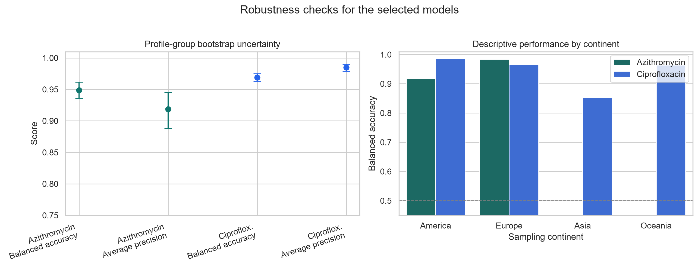

Predicting antimicrobial resistance in N. gonorrhoeae
2025–2026Bioinformatics Computing II · Genomic machine learning
Tools: Python, Pandas, scikit-learn, Jupyter
In my Bioinformatics Computing II project, I used genomic unitig features from Neisseria gonorrhoeae isolates to study resistance to azithromycin and ciprofloxacin. I compared machine learning models and examined how different evaluation choices affected their performance.
- Reviewed 3,786 metadata records and matched labelled isolates with antibiotic-specific genomic features.
- Compared logistic regression and random forest models using a prevalence baseline and grouped five-fold cross-validation.
- Used bootstrap confidence intervals and geographic subgroup comparisons to examine variation in model performance.
- Used BLAST to examine selected unitigs, including alignments to resistance-associated gene regions involving penA and gyrA.
The models performed well in internal cross-validation, although the results may be optimistic because the genomic features had already been filtered using GWAS. Testing on independent datasets would help establish how well the models generalise.
Methods, results & figure
Variance filtering and chi-square feature selection are fitted inside each training fold. Identical unitig profiles stay in the same fold. I did not train a prediction model for cefixime because only five isolates were labelled resistant.
| Antibiotic | Labelled isolates | Balanced accuracy |
|---|---|---|
| Azithromycin | 3,478 | 0.949 |
| Ciprofloxacin | 3,088 | 0.969 |
These results are based on internal cross-validation and may be optimistic because the genomic features were already GWAS-filtered. I also used BLAST to examine selected unitigs and found alignments to regions of known resistance-associated genes, including penA and gyrA. These matches provide biological context for the predictions, although sequence alignment alone does not establish a causal role in resistance.

